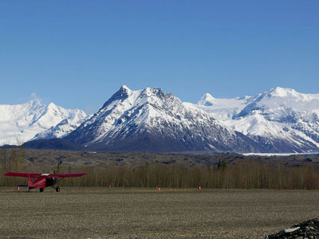
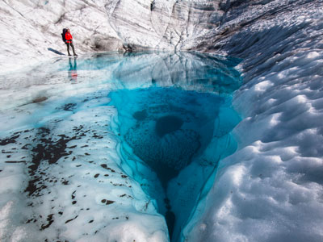
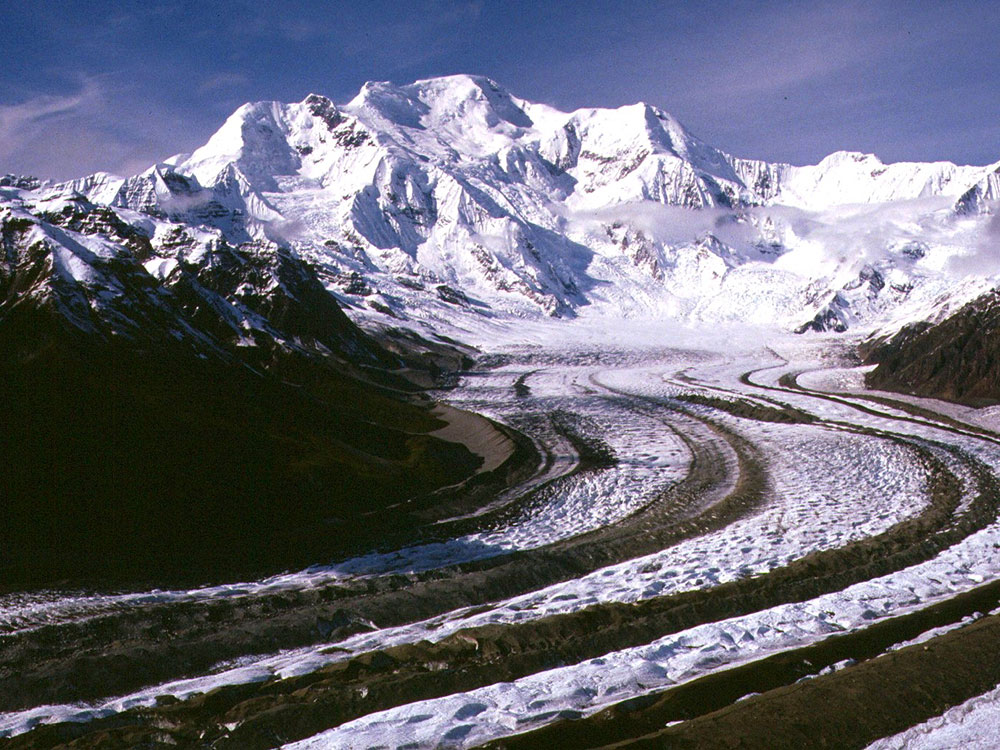
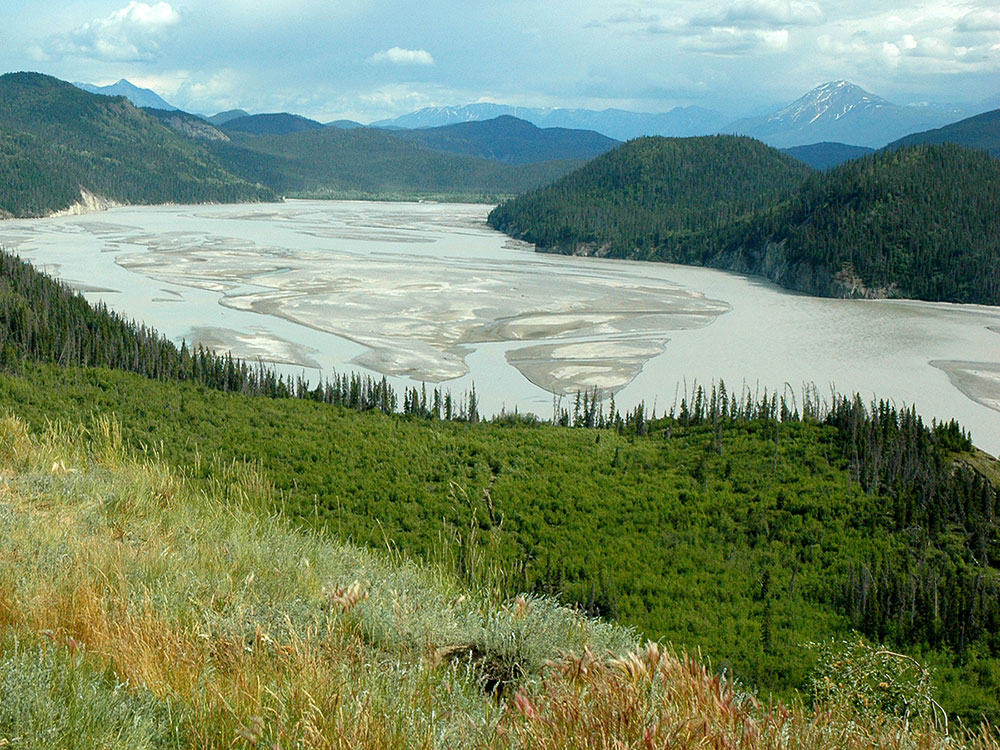

.jpg){kind=link}
A vast protected wilderness encompassing massive glaciers, rugged mountain ranges, and remote valleys offering unparalleled opportunities for exploration and outdoor adventure.
Copper Center Visitor Center: Mid-May through mid-September
Kennecott Visitor Center: Late May through mid-September
All visitor centers closed October through April
Fees may apply for guided tours, shuttles, and special activities
How to Get There
From Anchorage (200+ mi): Take Glenn Hwy (AK-1 E) toward Glennallen, then connect to Richardson Hwy (AK-4) and follow signs to various park access points such as Nabesna Road or McCarthy Road depending on your destination.
Overview
Wrangell-St. Elias National Park and Preserve in Southcentral Alaska is the largest national park in the United States. At about 13.2 million acres, it is roughly the size of six Yellowstones. Four major mountain ranges meet here: the Wrangell, St. Elias, Chugach, and eastern Alaska Range. The park contains nine of the 16 highest peaks in the United States, including Mount St. Elias, the second-highest peak in the country at 18,008 feet, and Mount Wrangell, a massive active volcano. Glaciers cover about a third of the park, including the Malaspina Glacier, the world's largest piedmont glacier, which is bigger than the state of Rhode Island.
The region is the homeland of the Ahtna and Upper Tanana Athabascan peoples, as well as the Eyak and Tlingit on the coast. In the early 1900s, rich copper deposits led to the founding of the Kennecott mines, which shipped copper out by railroad until 1938 and left behind a remarkable mill town that is now a National Historic Landmark. Wrangell-St. Elias became a national monument in 1978 and a national park and preserve in 1980. Along with Canada's Kluane National Park and other neighboring parks, it forms one of the largest protected areas in the world and a UNESCO World Heritage Site. Visitors come to explore the historic Kennecott mill town, hike on glaciers, drive remote backcountry roads, and flightsee over the enormous peaks and icefields.
Park Sections
Most visitors explore the park from one of two gravel roads. The McCarthy Road runs about 59 miles from Chitina into the heart of the park and ends at a footbridge over the Kennicott River, which leads to the small town of McCarthy and the historic Kennecott mill town about 5 miles beyond. This is the most visited part of the park. In the north, the 42-mile Nabesna Road leaves the Tok Cutoff at Slana and leads into a quieter area of mountains, lakes, and trails. The park's main visitor center is in Copper Center, on the Richardson Highway along the park's western edge. The park also stretches south to the Gulf of Alaska near Yakutat, where the Malaspina and Hubbard Glaciers meet the sea. Most of the park is roadless wilderness reached only by air.
Sightseeing and Scenic Drives
Along the Richardson Highway near Copper Center, pull-offs offer views of the Wrangell Mountains, including Mount Drum, Mount Wrangell, and Mount Sanford. The paved Edgerton Highway leads to the small town of Chitina at the confluence of the Copper River and Chitina River, where fishwheels and dipnetters catch salmon in summer. From there, the McCarthy Road follows the bed of the old Copper River and Northwestern Railway, crossing the Kuskulana Bridge high above a river gorge. It is a slow, bumpy drive of about two to three hours, and many rental car companies do not allow their cars on it. The Nabesna Road offers sweeping views of the Wrangell Mountains, as well as lakes and wildlife, with its last few miles crossing several creeks. Flightseeing from McCarthy, Chitina, Glennallen, and Tok is the best way to see the park's vast icefields and peaks, and some tours land on glaciers.
Hiking
The park's best-known trails start at Kennecott. The Root Glacier Trail (about 4 miles round trip) is an easy to moderate walk to the edge of the Root Glacier, where visitors with proper gear or a guide can walk out onto the ice. The strenuous Bonanza Mine Trail (about 9 miles round trip with 3,800 feet of elevation gain) climbs to the ruins of a mine high above the valley with sweeping glacier views, and the Jumbo Mine Trail is similarly challenging. Along the Nabesna Road, trails such as Caribou Creek, Rock Creek, and Skookum Volcano lead into the mountains. Near the Copper Center Visitor Center, the short Boreal Forest Trail offers views of the Wrangells on clear days. Beyond these few trails, most hiking in the park is off-trail backcountry travel.
Other Activities
At Kennecott, visitors can join guided tours of the historic 14-story concentration mill and other mine buildings, and park rangers lead walks and programs in summer. Local outfitters in McCarthy and Kennecott offer guided glacier hiking and ice climbing on the Root Glacier, as well as rafting and packrafting trips on the Kennicott, Nizina, and Chitina Rivers. Mountaineers come to climb peaks such as Mount Blackburn and Mount St. Elias. Other activities include flightseeing, backpacking, mountain biking near McCarthy, fishing, and hunting in the preserve. The Copper River near Chitina is known for its salmon fishery, including dipnetting (open only to Alaska residents).
Flora and Wildlife
Wrangell-St. Elias protects some of the largest populations of Dall sheep in North America, as well as mountain goats on the coastal ranges. Other wildlife includes brown and black bears, moose, caribou, wolves, wolverines, lynx, and a herd of bison along the Copper and Chitina Rivers. Trumpeter swans nest in the park's wetlands. Along the coast near Yakutat, visitors may see harbor seals, sea lions, sea otters, and whales. The park's landscapes range from spruce forest and wetlands in the valleys to alpine tundra and vast icefields. In summer, fireweed and other wildflowers bloom along the roads and around McCarthy and Kennecott.
Access
Wrangell-St. Elias is one of the few Alaska national parks that can be reached by road. The Copper Center visitor center is about 200 miles (4 hours) northeast of Anchorage by way of the Glenn Highway to Glennallen and the Richardson Highway, and about 2 hours north of Valdez. To reach McCarthy and Kennecott, drive from the Richardson Highway along the Edgerton Highway to Chitina, then take the 59-mile gravel McCarthy Road to the footbridge. The full drive from Anchorage takes about 7 to 8 hours. The Nabesna Road begins at Slana on the Tok Cutoff, northeast of Glennallen. In summer, Copper Valley Air flies from Anchorage and Glennallen to McCarthy, and air taxis fly into the backcountry from McCarthy, Chitina, Glennallen, and Tok. The coastal section near Yakutat is reached by commercial flight.
Seasons
The park is open all year, but most visitors come from late May to mid-September, when the visitor centers, shuttles, and guiding services operate. Summer brings long days and mild weather, but also rain and mosquitoes. In late August and September, fall colors light up the forests and tundra, and the first snow dusts the peaks. All visitor centers and contact stations are closed from October through April. In winter, the McCarthy and Nabesna Roads are not regularly maintained, shuttles do not run, and the park is visited mainly by local residents, skiers, and snowmachiners, with long nights and excellent northern lights.
Camping and Lodging
Most lodging is in and around McCarthy and Kennecott, which have historic hotels, lodges, cabins, and hostels, including the Kennicott Glacier Lodge near the mill town and Ma Johnson's Hotel in McCarthy. Private campgrounds near the footbridge at the end of the McCarthy Road offer tent and RV sites. On the Nabesna Road, the free Kendesnii Campground has a few sites. The park also has public use cabins scattered through the backcountry, and backcountry camping is allowed throughout the park. Remote fly-in lodges offer all-inclusive wilderness stays. Outside the park, Glennallen, Copper Center, and Chitina have motels, lodges, and campgrounds, and Valdez and Tok are good bases for longer trips.
Visitor Centers
The main Wrangell-St. Elias Visitor Center is in Copper Center at mile 106.8 of the Richardson Highway, about 10 miles south of Glennallen. It has exhibits, a film, a bookstore, and trails, and it is open daily in summer. The Kennecott Visitor Center, in the historic Blackburn School in the mill town, provides information and ranger programs in summer. The Slana Ranger Station on the Nabesna Road, the Chitina Ranger Station, and the Yakutat Ranger Station also offer seasonal information. All visitor centers are closed from October through April.
Shuttle System
There is no park-run shuttle system, but private shuttles make it possible to visit without driving the McCarthy Road. In summer, van shuttles run to McCarthy from Anchorage, Glennallen, and Valdez on a limited schedule, and reservations are required. At the end of the McCarthy Road, visitors cross the footbridge on foot. From there, two park-authorized shuttle services carry visitors between the footbridge, McCarthy, and Kennecott, about 5 miles away, with schedules posted at the bridge. Visitors can also walk or bike to Kennecott. Parking at Kennecott is very limited, and there is no shuttle service in winter.
Things to Do
Explore America's Largest National Park
Wrangell-St. Elias National Park & Preserve encompasses more than 13 million acres of mountains, glaciers, rivers, forests, and wilderness in southeastern Alaska. Four major mountain ranges converge within the park, creating one of North America's most spectacular and remote landscapes. Visitors can explore historic mining sites, hike on glaciers, drive scenic backcountry roads, and experience true wilderness adventure.
Visit the Historic Kennecott Mining District
The historic town of Kennecott is one of the park's most popular destinations. Once a thriving copper mining community, the area now features restored mill buildings, interpretive exhibits, ranger programs, and opportunities to learn about the region's industrial history. Nearby McCarthy serves as the primary gateway for many park visitors.
Hike to Root Glacier
Root Glacier provides one of the most accessible glacier experiences in Alaska. Visitors can hike to the glacier independently from Kennecott or join guided excursions that travel across the ice, allowing exploration of crevasses, ice formations, and glacial landscapes.
Take a Flightseeing Tour
Due to the park's immense size and limited road access, flightseeing is one of the best ways to appreciate Wrangell-St. Elias. Scenic flights provide views of vast icefields, towering peaks, active glaciers, and remote wilderness areas that cannot be reached by road.
Drive the McCarthy Road
The 59-mile McCarthy Road follows the route of a historic railway through rugged Alaska backcountry. The journey offers opportunities to view wildlife, rivers, forests, and mountain scenery before reaching the pedestrian bridge that provides access to McCarthy and Kennecott.
Explore the Nabesna Road Area
The 42-mile Nabesna Road accesses the northern portion of the park and provides visitors with scenic viewpoints, hiking opportunities, wildlife viewing, and a less-crowded alternative to the McCarthy area. The drive showcases dramatic mountain landscapes and remote wilderness.
Experience Outdoor Adventure
Wrangell-St. Elias offers a wide range of outdoor recreation opportunities including backpacking, rafting, glacier trekking, mountaineering, wildlife viewing, camping, and backcountry exploration. The park's immense size and rugged terrain make it one of Alaska's premier destinations for adventure travelers.
Top Trails
Root Glacier Trail
Length: Approximately 4 miles round trip
Elevation Gain: Minimal
Difficulty: Easy to Moderate
This popular trail begins in Kennecott and leads hikers to the edge of Root Glacier. The route offers outstanding views of glacial valleys, surrounding mountains, and the opportunity to access the glacier itself.
Bonanza Mine Trail
Length: Approximately 9 miles round trip
Elevation Gain: Approximately 3,800 feet
Difficulty: Strenuous
One of the area's signature hikes, the Bonanza Mine Trail climbs steeply above Kennecott to the historic Bonanza Mine site. Hikers are rewarded with panoramic views of glaciers, mountain peaks, and the Kennecott Valley.
Nugget Creek Trail
Length: Approximately 7 miles round trip
Elevation Gain: Moderate
Difficulty: Moderate
This scenic trail travels through forests and glacial terrain near Kennecott, leading to views of waterfalls, mountain scenery, and the surrounding wilderness.
This article uses material from the Wikipedia article "Wrangell-St. Elias National Park and Preserve", which is released under the Creative Commons Attribution-Share-Alike License 3.0
This article uses material from nps.gov "Wrangell-St. Elias National Park and Preserve", "Operating Hours & Seasons", and "Directions", and from Alaska.org "Things to Do in Wrangell-St. Elias National Park"
Featured Locations and Trails

Sueswim03 at English Wikipedia, Public domain, via Wikimedia Commons; Image Size Adjusted

Kennecott
Historic mining settlement featuring preserved industrial buildings, abandoned structures, and access to glaciers and rugged wilderness landscapes.

Gerald Smith, Public domain, via Wikimedia Commons; Image Size Adjusted

McCarthy
Remote historic town offering rustic accommodations, preserved frontier-era buildings, and access to vast wilderness, glaciers, and outdoor exploration.

National Park Service, Alaska Region, Public domain, via Wikimedia Commons; Image Size Adjusted
_(21587560302).jpg){kind=link}
Root Glacier Trail
Moderately challenging trail traversing glacial moraine and rocky terrain to a vast ice field where visitors can step onto a dynamic glacier surrounded by mountain scenery.



.jpg){kind=link}